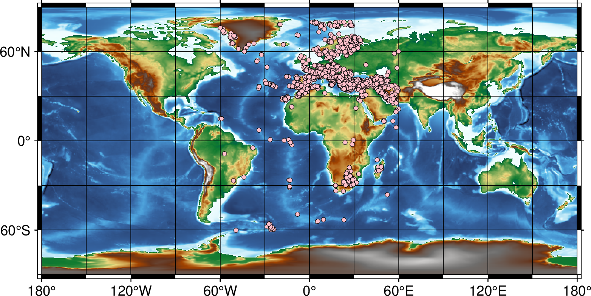

isf
- 官方文档:
- 简介:
将 ISF 格式的地震目录数据转换为 GMT 表数据
语法
gmt gmtisf ISFfile [ -Rregion ] [ -Ddate_start[/date_end] ] [ -F[a] ] [ -N ] [ --PAR=value ]
描述
将 ISC 发布的 ISF 格式的地震目录文件 file.isf 转为 [lon lat depth mag …] 格式的表数据，输出到标准输出。
必选选项
- ISFfile
ISF 格式的地震目录文件
可选选项
-Rwest/east/south/north[/zmin/zmax][+r][+uunit]
指定感兴趣的区域。 注： 如果在现代模式下未设置 -R ，则将按照之前的绘图命令设置范围。 如果这是现代模式下的第一个绘图命令，且未设置 -R ，则将基于数据 table 自动确定范围（相当于 -Ra ）。
该选项可以通过多种方式来定义区域：
-Rwest/east/south/north 这是在使用经纬线呈直线的地图投影时指定地理区域的标准方式。 坐标可用十进制度表示，也可以使用 [±]dd:mm[:ss.xxx][W|E|S|N] 格式表示。
-Rwest/south/east/north+r 当使用倾斜（斜轴）投影时，经线和纬线不再适合作为地图边界。 在这种情况下，可以通过给出矩形的左下角与右上角的地理坐标，并添加 +r 修饰符， 来保证地图输出区域为矩形，即使经纬线不是直线。
-Rg 或 -Rd 用于快速指定全球范围。-Rg 表示经度 0 到 360，纬度 -90 到 +90； -Rd 表示经度 -180 到 +180，纬度 -90 到 +90。
-Rcode1,code2,…[+e|r|Rincs] 通过查阅 DCW（数字世界地图）数据库，间接地根据一个或多个国家代码来确定边界区域。 可以使用两个字符的 ISO 3166-1 alpha-2 国家代码（例如 NO）或完整国名（例如 Norway）。 如果要选择国家内的某个州（若可用），请追加 .state（如 US.TX），或使用完整州名（如 Texas）。 若要选择整个大陆，请直接拼写完整名称（如
-RAfrica）。 还可指定 DCW数据 的缩写或完整名称。所有名称大小写不敏感。 可附加以下修饰符：
+r：将区域边界调整为 inc、xinc/yinc 或 winc/einc/sinc/ninc 的整数倍（默认不调整）。 例如，-RFR+r1 将法国的边界取整到最接近的整数度。inc 为正数表示扩大范围，负数表示缩小。
+R：在区域边界的基础上增加或减少 inc、xinc/yinc 或 winc/einc/sinc/ninc 的数值（默认不扩展）。 inc 为正数表示扩大区域，负数表示缩小。
+e：将区域边界调整为 inc、xinc/yinc 或 winc/einc/sinc/ninc 的整数倍， 并确保边界至少调整 inc 的 0.25 倍（默认不调整）。
-Rxmin/xmax/ymin/ymax[+uunit] 在投影单位（如 UTM 米制）下指定区域。 其中 xmin/xmax/ymin/ymax 为与所选投影 (-J) 兼容的笛卡尔坐标。 unit 为允许的 单位 和 -j 选项 (默认是 e)。 该选项会反算出实际的矩形地理区域。
对于以 (0,0) 为中心的投影区域，可使用简写形式 -Rhalfwidth[/halfheight]+uunit， 其中 halfheight 默认为 halfwidth。此简写形式必须带 +u 修饰符。
-Rjustifylon0/lat0/nx/ny 其中 justify 为两字符组合： L|C|R (左，中，右) and T|M|B (上，中，下)，(例如, BL 为左下角) justify 指明 lon0/lat0 是矩形区域的哪个点， 而 nx 与 ny 与网格间距（通过 -I 设置）共同决定区域范围。 该形式常用于创建网格。 例如：-RCM25/25/50/50 表示一个以 (25,25) 为中心、尺寸为 50×50 的网格区域。
-Rgridfile 从指定网格文件中复制区域范围设置。 根据调用模块的不同，此方式可能同时设置网格间距与网格配准方式 （参见 网格配准 ）。
-Ra[uto] 或 -Re[xact] 仅在现代模式下的绘图模块可用。自动从输入数据中确定区域：
-Re：精确匹配数据的范围（默认若未指定 -R）。
-Ra：在数据范围基础上略微扩大，使区域边界为数据范围的合理倍数。
- -Ddate_start[/date_end]
仅处理发震时刻在特定时间范围内的事件，时间格式为 ISO， e.g. 2000-04-25
仅设置 date_start 表示仅处理时间范围在 date >= date_start 的部分。
设置 date_start 和 date_end 表示处理时间范围在 date_start <= date <= date_end 的部分。
- -F[a]
仅处理有震源机制解的事件。
默认输出为 Global CMT 约定的格式，每列分别代表
1,2 - 震源的经度和纬度 (可使用 -: 交换两列)
3 - 震源的深度 (km)
4,5,6 - 节面 1 的走向，倾角，滑动角
7,8,9 - 节面 2 的走向，倾角，滑动角
10,11 - 地震矩的尾数和指数 (dyne-cm)
加上 a 则输出为 Aki and Richards 约定的格式，每列分别代表
1,2 - 震源的经度和纬度 (可使用 -: 交换两列)
3 - 震源的深度 (km)
4,5,6 - 走向，倾角，滑动角
7 - 震级
- -N
跳过最后 5 列 [year month day hour minute] 的时间信息 [默认输出] 。
示例
# 从 ISC 官网下载 ISF 格式的地震目录
wget https://download.isc.ac.uk/isf/catalogue/2020/202001.gz
gzip -dkN 202001.gz
gmt begin testisf
gmt grdimage @earth_relief_30m -Rd -JQ12c -B60f30g30
# 限制空间范围、时间范围
gmt isf 202001.isf -R-60/60/-80/80 -D2020-01-01/2020-01-15 > seismicity.dat
gmt plot seismicity.dat -Sc0.1c -Gpink -W0.1p
gmt end show
